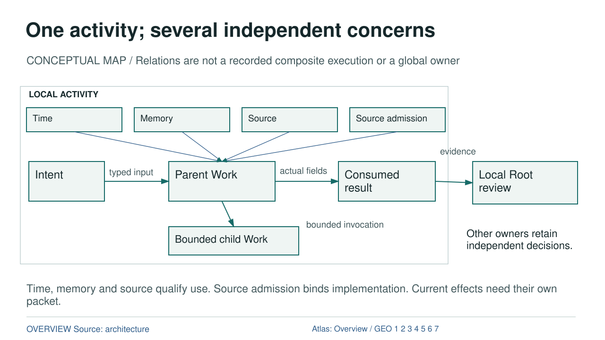

One activity; several independent concerns

Diagram text equivalent
- One activity; several independent concerns
- CONCEPTUAL MAP / Relations are not a recorded composite execution or a global owner
- Local activity region; nested bounded Work, not global ownership
- LOCAL ACTIVITY
- INTENT: Intent
- Intent
- WORK: Parent Work
- Parent Work
- RESULT: Consumed result
- Consumed result
- CHILD: Bounded child Work
- Bounded child Work
- DATA: typed input
- typed input
- DATA: actual fields
- actual fields
- DATA: bounded invocation
- bounded invocation
- ROOT: Local Root review
- Local Root review
- DATA: evidence
- evidence
- Other owners retain independent decisions.
- TIME: Time
- Time
- Time qualifies Work, not permission
- MEMORY: Memory
- Memory
- Memory qualifies Work, not permission
- SOURCE: Source
- Source
- Source qualifies Work, not permission
- SOURCE_ADMISSION: Source admission
- Source admission
- Source admission qualifies Work, not permission
- Time, memory and source qualify use. Source admission binds implementation. Current effects need their own packet.
- rule
- OVERVIEW Source: architecture
- Atlas: Overview / GEO 1 2 3 4 5 6 7
CONCEPTUAL MAP / Relations are not a recorded composite execution or a global owner
Text Equivalent
One activity; several independent concerns
CONCEPTUAL MAP / Relations are not a recorded composite execution or a global owner
LOCAL ACTIVITY
Intent
Parent Work
Consumed result
Bounded child Work
typed input
actual fields
bounded invocation
Local Root review
evidence
Other owners retain independent decisions.
Time
Memory
Source
Source admission
Time, memory and source qualify use. Source admission binds implementation. Current effects need their own packet.
OVERVIEW Source: architecture
Atlas: Overview / GEO 1 2 3 4 5 6 7
Exact Relations
- INTENT to WORK: DATA, typed input.
- WORK to RESULT: DATA, actual fields.
- WORK to CHILD: DATA, bounded invocation.
- RESULT to ROOT: DATA, evidence.
- TIME to WORK: CONCEPTUAL_CONTEXT, Time qualifies Work; no permission.
- MEMORY to WORK: CONCEPTUAL_CONTEXT, Memory qualifies Work; no permission.
- SOURCE to WORK: CONCEPTUAL_CONTEXT, Source qualifies Work; no permission.
- SOURCE_ADMISSION to WORK: CONCEPTUAL_CONTEXT, Source admission qualifies Work; no permission.